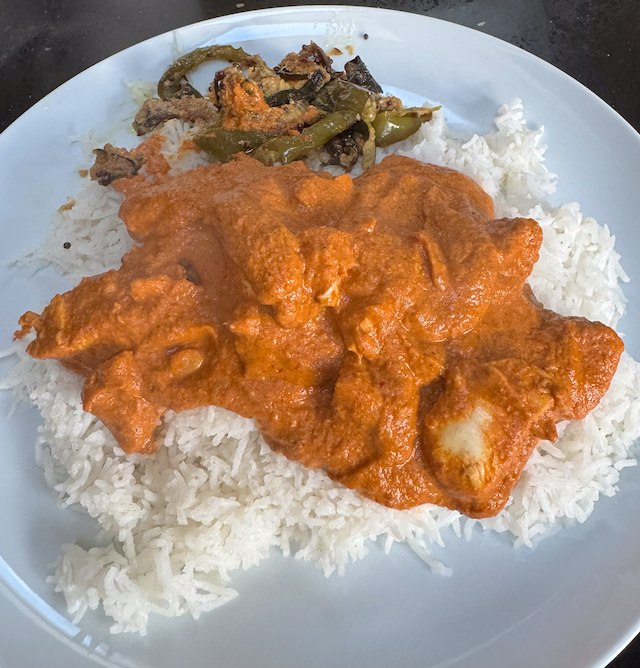

Butter Chicken

From reddit. Serve with rice.
Ingredients
- Sauce
- handful cashews, soaked in milk
- 2 tbsp vegetable oil
- 1 piece mace
- 4 cardamom pods, crushed
- 1 cinnamon stick
- 2 bay leaves
- 2 star anise
- 50g butter
- 1 tbsp cumin powder
- 1 tsp coriander powder
- 1 tsp paprika
- 1 tsp chili powder
- 1 onion, sliced
- 5 garlic cloves, sliced
- 2 400g tin chopped tomatoes
- ½ tsp cinnamon
- 1 chilli, deseeded and chopped
- 3cm ginger, grated
- 1 tsp salt
- 1 tbsp white wine vinegar
- 25g butter
- 1 tsp turmeric
- 1 tbsp ground fenugreek
- 1 tbsp garam masala
- 100ml-150ml double cream
- salt and pepper to taste
- Chicken
- 6-8 chicken breasts, in 2cm cube
- 150ml natural yogurt
- 4cm ginger piece
- 10 garlic cloves
- 1 tbsp chili flakes
- 4 tbsp lime juice
- 2 tbsp ground cumin
- 1 tbsp garam masala
- 2 tbsp paprika
- 1 tsp cayenne pepper
- 3 tbsp sunflower oil
Method
Sauce. Soak cashews in milk.
Heat pan to medium. Add oil, mace, star anise, cinnamon stick, cardamoms, bay leaves and fry for about 30 seconds.
Add butter, chili powder, paprika, cumin, coriander and fry for another 30 secs.
Add onion and garlic and fry on low heat for about 30-45 minutes until caramelized. After 15 min add a little salt to draw out the liquid from the onions.
Add cinnamon and fry for a moment. Then add tomatoes, ginger, chili, vinegar, cashews, salt. Bring to a simmer and cook for 20-30 min until thickened.
Pick out the larger spices, then liquidate.
Melt the butter in a frying pan, then fry turmeric and fenugreek leaves for 30 sec. Add to the sauce, and simmer for a bit.
To finish add garam masala and cream and simmer for a minute. Taste for salt.
Chicken. Liquidate marinade ingredients. Then add yogurt and liquidate some more. Marinade the chicken for 6 hours, or until your ready to cook.
Put the chicken on a rack on an oven tray, and cook for 15 min on 180°C fan.
Add chicken to sauce, then serve with rice.